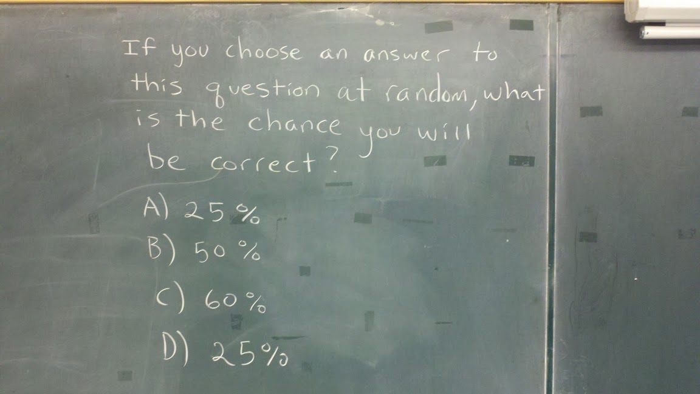
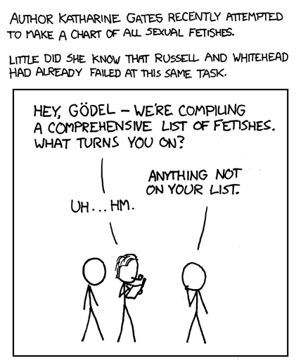

La respuesta
Dicen que al final de sus días Kurt Gödel trataba de demostrar la existencia de Dios mediante un razonamiento ontológico. En 1960 escribió en sus apuntes sus puntos de vista filosóficos, para él el mundo debía ser racional. Supongo que no habría aceptado los resultados actuales de las ciencias cognitivas. También se dice que era un hombre tímido que vivía un tanto angustiado… Me pregunto ¿Cuál habría sido la respuesta de Gödel al problema que planteamos el domingo?
Acá está de nuevo:

¿En qué estaría pensando el profesor que escribió esto en la pizarra?
Este es un verdadero ataque de denegación de servicio (DOS) al cerebro, ¿no creen? :wink:
Vamos con la respuesta, o al menos la respuesta que supongo espera el profesor que escribió esto.
La respuesta no es 25%, ni 50%, la respuesta es B, claro, ¡estamos hablando de la respuesta que esperaría un profesor de matemáticas! :smile:
El razonamiento es el siguiente:
Primero hay que considerar que esta es una “meta pregunta”, una pregunta sobre una pregunta. Si en la pizarra estuviera escrito: “para una pregunta cualquiera con 4 alternativas, ¿cuál es la probabilidad de elegir al azar la alternativa correcta?”, la respuesta obvia sería 1 en 4, o sea, 25%.
Pero la pregunta es auto referente, es una meta pregunta, recuerden, que dice: “si usted escoge una respuesta a esta pregunta al azar”. Resulta que esta pregunta tiene 2 respuestas que dicen 25% A y D. Entonces la probabilidad en esta pregunta es 2 sobre 4 (porque cada respuesta es independiente una de otra), o sea 50%. Entonces la respuesta sería B: 50%. Lo interesante es que dado que la respuesta correcta, de la meta pregunta, es sólo una: la opción B, se mantiene el hecho de que la probabilidad de elegir al azar la respuesta a cualquier pregunta con 4 alternativas es del 25%!!.
Pero varios no quedan conformes con esta respuesta, ¿verdad? Lo que pasa es que esta es una pregunta recursiva, un tema que le fascinaba a Kurt Gödel.
¿Recuerdan la paradoja de Pinocho? Acá está para los que no se acuerden:
Gödel usó este tipo de expresiones recursivas para demostrar su famoso teorema de incompletitud. Entonces ustedes amigos computines, que han sido programados en la tradición de la lógica de primer orden, andan buscando paradojas en todas partes, porque el pensamiento recursivo los lleva por ese camino.
Pero la pregunta de la pizarra no entra en un loop infinito, como la paradoja de Pinocho, o la famosa sentencia que usó Gödel para demostrar su teorema. Acá hay dos niveles, lo que permite resolver el problema.
OK, estoy seguro que esto va a generar varias discusiones en los comentarios, como le ocurrió a Cedric Beust, quien planteó originalmente este problema en su blog. La discusión que siguió en G+ sobre esta pregunta es intensa, y bien filosófica, pero estoy con Beust, creo que la respuesta B tiene el mejor argumento, y por último, en algún momento hay que cortar, por algo somos ingenieros, y no filósofos, ¿no creen?.
Ahora, ¿que pasa si cambiamos la alternativa C, si en vez de 60% fuera 42?
